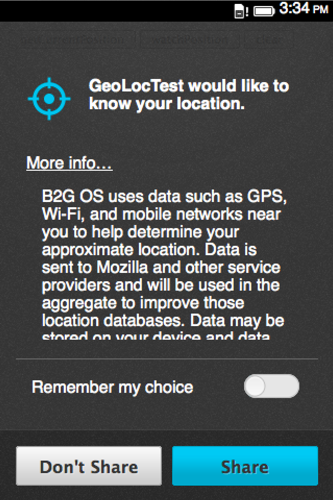
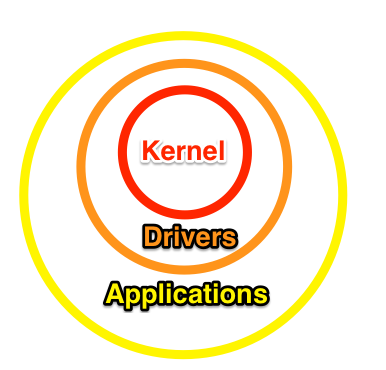
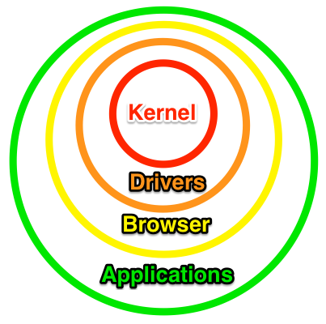
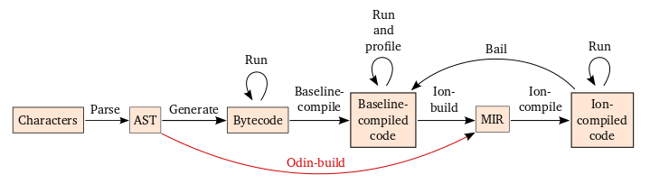

Convergence
Of the Broswer and OS
Nick Desaulniers
Nick Desaulniers
Open Source Zealot at Mozilla

- Organized NSA Protest in San Francisco.
- Spoke on NPR about how Software Patents are Evil.
Have you ever looked at your desktop and thought all of this can be done in JavaScript?
Is the browser the first application you find yourself launching on boot?
Trust
Reliance on another person or entity.
Can I trust an executable that I've downloaded from the Internet?
Can I trust that this game is not mining bitcoins without my consent ? (Denial of Service)
Can I trust that I'm downloading what you say I'm downloading?
If your software depends on bundling for distribution, then it is not legitimate software.
Process Isolation
Key design goal of Chrome.
Coming to Firefox Nightly. Try it out File > New e10s Window or set the browser.tabs.remote preference to true in about:config.
Trust needs to be revocable when broken.
Consent
Agreement or permission to do or allow something.
Ideally, we want informed consent.
End User License Agreements, Terms and Conditions, and Privacy Policies mean well, but ultimately are failures.
What kind of nefarious things does the OS let my applications do? With great power comes great responsibility.
We should be empowering users to provide informed consent.
Should we allow any application permission to touch the filesystem?
Should we allow any application to establish connections to hosts other than the one I navigated to?
Unixes implement user based permissions.
HTML5 implements application based permissions.
Hierarchical Protection Rings (today)
Hierarchical Protection Rings (tomorrow)
This is a Call
What we're looking for are API's that empower us as developers, but protect users from malice.

Performace
The capabilities of a machine, vehicle, or product, especially when observed under particular conditions.
Wont this additional layer of abstraction affect performance?
Why do we have virtual memory?
Why do we have CPU modes?
Why do we have pointers?
There will always be tradeoffs between additional layers of abstraction and performace.
As computing power increases, the disadvantages of additional abstraction decrease.
Competition is Healthy
JavaScript engines have gotten over 100x times faster since 2006.
Are we fast yet?My existing C/C++ codebase is pretty fast, can I run that in the browser?
NaCl
Native Client programs cannot directly invoke the native operating system, but must use only interfaces that encapsulate system services securely and portably.
Very low overhead: 5-10% slowdown.
NaCl
While the operating-system neutrality of Native Client tends to encourage good practices with respect to ISA portability, the burden of building, testing and deploying a program on all supported hardware platforms---currently IA-32, ARM and x86-64---lies with the developer. This arrangement makes it too easy for the developer to fail to support one or more ISAs, and tends to create a barrier for future new ISAs, threatening the portability promise of the Web.
PNaCl
Compile to a subset of LLVM IR which is translated on the client to a NaCl executable.
LLVM IR is a compiler IR [not a VM]
Easy to support if you ship an existing browser engine with Pepper API support, otherwise it requires duplication of lots of undocumented Chrome behavior.
Indeed JavaScript is a weird language, but most other languages can be compiled to it.
Swap out LLVM's codegen with our JS codegen!
asm.js
Banana Bread Triple Demo
Unreal Engine 3
Without OS support for allocating exectuable memory, it's not possible to have a competive JavaScript engine (no JIT).
asm.js
Works in all browsers. A subset of JavaScript is still just JavaScript. Things that work everywhere are great!Standards
A level of quality or attainment.

System Applications Working Group
Most APIs are in the Stable draft (Last Call) of W3C standardization process.
Browser API
Bluetooth API
Calendar API
Network Interface API
Media Storage API
Secure Elements API
Device Capabilities API
System Settings API
Idle API
Execution Model
Security Model
Alarm API
Contacts API
Messaging API
Telephony API
Raw Sockets API
Bluetooth API
Developer Tools
The next forefront of competition between browser vendors.
WebApp Runtime
Success
Achievement of intention: the achievement of something planned or attempted.
Chromebooks Made Up 20% of US Laptop Sales in 2013, Says NPD
Around 390,000 Firefox OS phones shipped last year, according to IDC, a figure it expects to rise to 2.5 million this year.
We haven't won yet, but we're showing viability for a novel concept.
Call to Action
What would a computing environment encapsulated within a browser look like?
Thanks
Nick Desaulniers
@LostOracle on Twitter
\n on irc.mozilla.org
nickdesaulniers on GitHub
nickdesaulniers.github.io -> blog